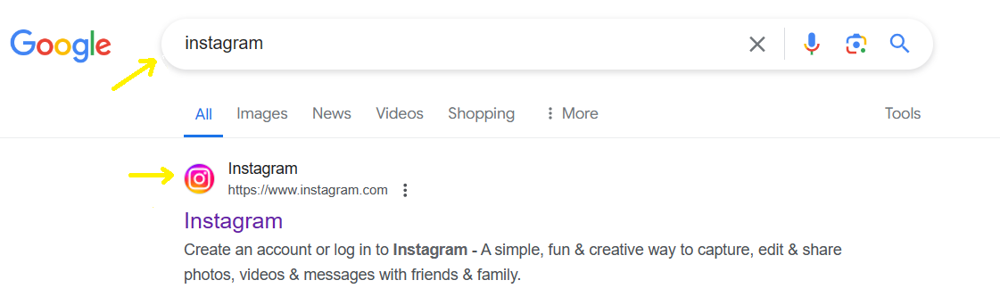

Manual de Acesso à Internet
Olá! Espero que esse guia sirva para facilitar a conexão dos dispositivos em rede.
-
1- Como ligar o wi-fi(internet) no celular
Essa maneira só funciona fora de casa quando o Chip do celular possui um Plano que permite o uso dos Dados Móveis. Caso o seu chip não possua esse plano, não vai funcionar.


- Ofertas de plano geralmente são assim:

Também é possível acessar a internet através de uma Rede Wi-fi disponível no local
-
Caso seu celular seja xiaomi

-
Caso seu celular seja um Iphone

-
Caso seu celular seja um Samsung

-
Caso seu celular seja um Motorola

Caso não seja nenhum desses, verifique as configurações do celular para procurar a rede de internet ou dados móveis disponível em seu modelo.
2- Verifique o ícone(caixa) do seu celular que serve para conexão
3- Acesse o Google para pesquisar alguma coisa
O Google é um site que permite buscar por informações usando a internet

4- Acesse outros aplicativos que também dependem da internet
- Acesse as páginas através do google, buscando o "url" do site, que é o link para a página que hospeda o aplicativo que todos utilizam com frequência.
- Alguns Exemplos de como acessar essas redes, o que pode ser compreendido para qualquer outro site
- Agora, tente você mesmo!
- Exemplo: pesquisar pelo aplicativo instagram
- 
- Exemplo: buscar por um jornal
Ative os dados móveis do seu celular que está relacionado ao seu chip.
Lembre de desativá-lo quando não for usar
Verifique se o seu celular possui alguns desses ícones:
Pois cada celular vai ter um de acordo com o padrão da fábrica


Desafio: Faça o login em suas contas
Você sabe o que é "login", essa palavra significa "o acesso" em inglês
O seu "acesso" é o que faz o aplicativo identificar que é você mesmo quem está usando a conta